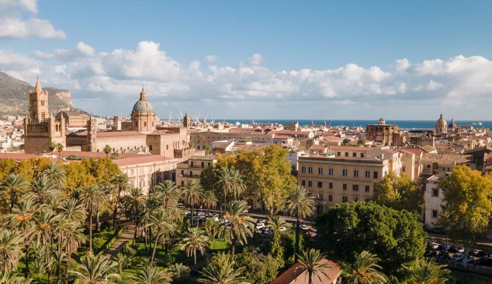

History of Palermo
Palermo is the capital of Sicily. It is located on the northern coast of the island and looks out over the Tyrrhenian Sea.Palermo is a place where ancient civilizations meet. The city is a blend of cultures, arts, and traditions. The capital of Sicily is undoubtedly one of the most visited cities on the island. 
It is the perfect vacation destination, as it combines history, art, nature, relaxation, and entertainment.
Palermo stands out thanks to its authentic atmosphere and diversity.
Palermo is a center of art, and just a walk through the city’s streets will convince you of this.
Among the palaces, churches, and historic buildings, you will also see a wide range of architectural styles.